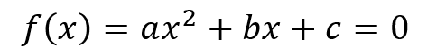
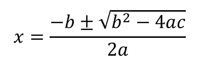
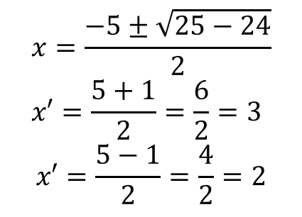

As raízes ou zeros da função do segundo grau representam aos valores de x tais que f(x) = 0. As raízes da função são determinadas pela resolução da equação de segundo grau:
Para resolver a equação do 2º grau podemos utilizar vários métodos, sendo um dos mais utilizados a Fórmula de Bhaskara, ou seja:
Exemplo
Encontre os zeros da função f(x) = x2 – 5x + 6.
Solução
Sendo a=1, b=-5, c=6
Substituindo esses valores na fórmula de Bhaskara, temos:
Portanto, as raízes são 2 e 3.
Observe que a quantidade de raízes de uma função quadrática vai depender do valor obtido pela expressão: Δ = b2 – 4. ac, o qual é chamado de discriminante.
Assim:
- Se Δ > 0, a função terá duas raízes reais e distintas (x1 ≠ x2);
- Se Δ , a função não terá uma raiz real;
- Se Δ , a função não terá uma raiz real;